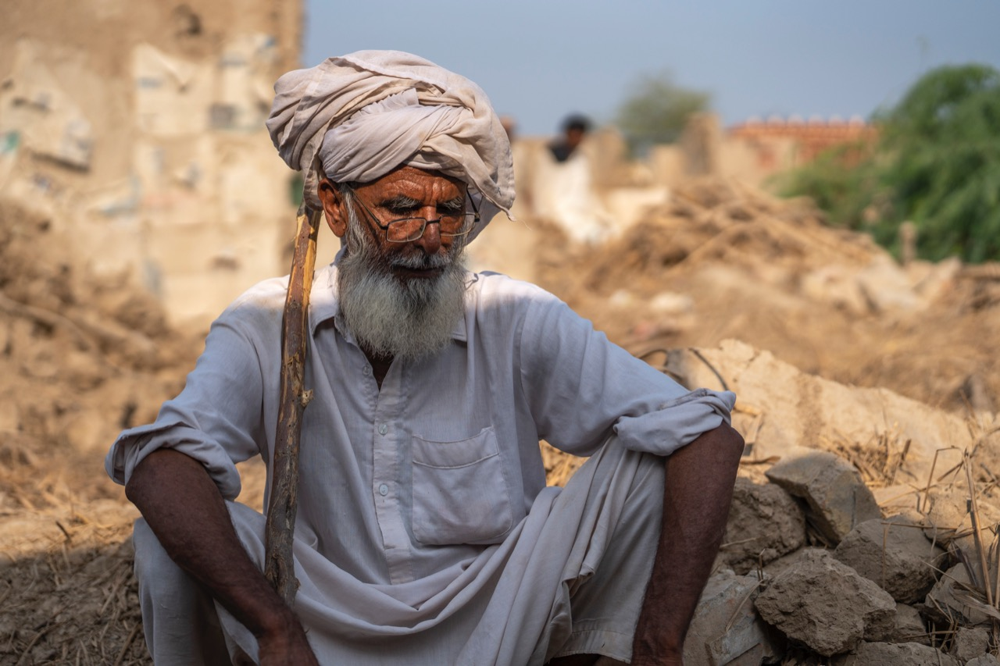
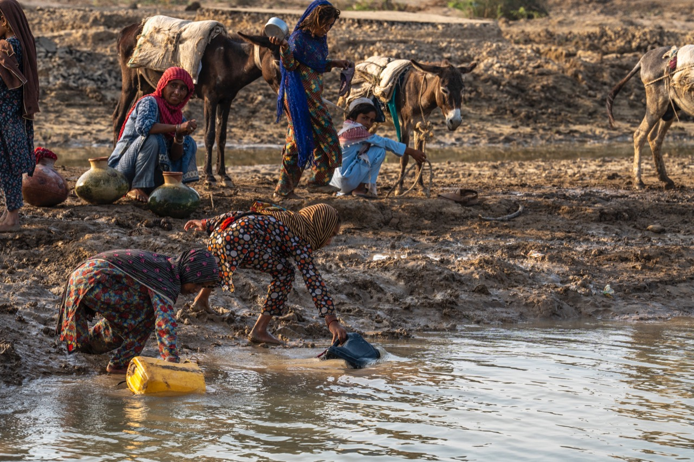
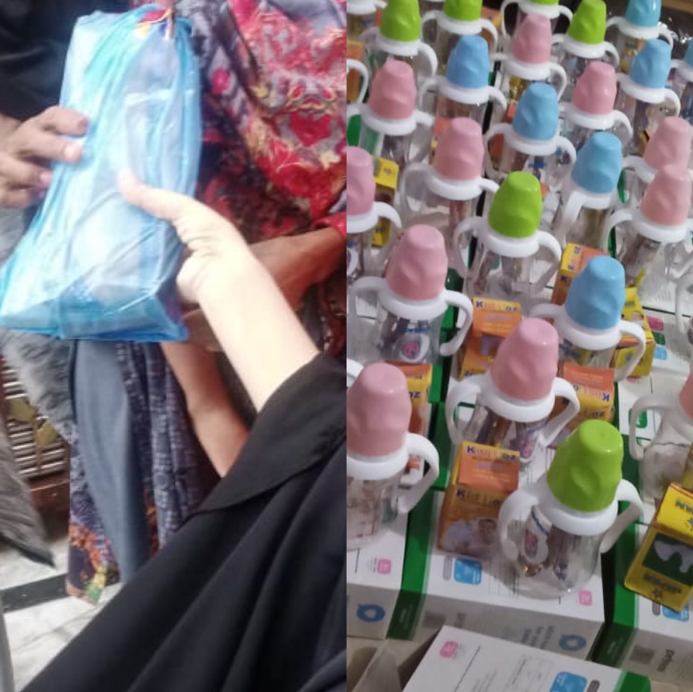

By Asmaar Hussain
Last month, torrential rains began battering D I Khan and its surroundings. Over the next few days, at least 24 people were killed, as homes were flooded, bridges and crops were destroyed and floodwaters reached up to the highest. It was evening of 20th August, when a family member from Dera Ismail Khan told me that due to heavy rains our villages are getting flooded. I belong to Dera Ismail khan and my mother was informing me time to time that due to heavy rains our homes are getting water filled. But a day later, I got call from Proa village that we have been called to evacuate your villages and move to Dera Ismail khan city due heavy flash floods. It was alarming and emergency situation in the villages.
Dera Ismail khan has 6 Tehsils, 47 Union Councils & 150 village councils. Most of the District consists of villages. As soon as I came to know that emergency is declared in district Dera Ismail khan due to torrential monsoon rains, and people are being shifted to dera Ismail khan. Being an active social media user with around good social media following, I Posted an Instagram Story to raise funds for Flood Victims of my city. That one Story has changed me for weeks, I had sleepless nights the day we started rescue and relief operation by our own.
I have been in social welfare from past 14 years, so people trust me. But this was massive Support by our Social media followers, who felt the pain and grief. I moved to Dera Ismail khan to personally visit flooded areas. Photographers’ society of D I Khan, Ehsas volunteers, Youth and Dera Fixers had also started rescue and relief work in the city. We made a single group on WhatsApp and started collective effort to maximise our reach to flood victims. Later we were joined by 10-15 more teams who started working at their own. We had made a camp office in Di Khan where all 15 team heads agreed to streamline our efforts. Our team of volunteers flew out on 28th August to distribute emergency aid. This is their account from the ground.
We arrive in DI Khan in the emergency crisis. This was the worst flood seen since 2010, and a total of 70-80 percent areas across DI Khan were reported to have been overwhelmed by floods. Our team visits villages Budh, Chakan, Paroa, Kaich, Sagu and Garah Muhabat and so on located which is located near the capital of Di Khan, Khyber Pakhtunkhwa.
We divided our team into different team Heads, Medical team who was totally responsible of providing medical assistance, medical camps and emergency support for critical patients. Another team had to provide ration support to our volunteers who are going to flooded areas for rescue and relief. Third team was looking for cooked food to be provided to all refugees who came to city after their villages were heavily flooded. Fourth team was responsible of providing hygiene kit to ladies which we were highly supported by National Squash Champion Noreena Shams from Peshawar, it also consists essentials for new born babies and any other pregnancy related assistance. Fifth team was responsible for providing clean water to flood effected people or reaching them at their home with cans of fresh water.
I was coordinating with Army/govt officials if we needed any support and also collecting funds from my social media influence. I was also responsible for coordinating among all team members and providing all necessary items any team member require. After 2010 floods this flood has broken 100s of years record, in this hard time, Dera Ismail khan youth has responded amazingly by self-originated efforts 24/7. From this team we have given cooked food to more than 50 thousand people, 5000+ ration to families, 100+ medical camps, treated thousands of patients, 5000+ hygiene kits to ladies, 1000+ feeders for babies, 250,000 ltrs of water to flood effected areas and much more is still going on In Budh Village of Dera Ismail Khan, 70-80% homes were affected or completely demolished.
I saw an old man sitting on remains of flood disaster, I asked him what happened Chacha, He looked at me and said “Son, please take picture of my Shop, Maybe Govt rebuild it for me again, it was right here where I am sitting, my whole shop is demolished which was my only source of income, and he was unable to speak a word more”. His voice made me shattered from inside out. Imagine, it took him all life building this shop in front of a primary school and now at this age he has to start again. After the flood, clean water is biggest challenge for the resident of effected villages. I saw some young girls filling water cans with mud water.
I asked a man, are they using this water for drinking purpose he said “Obviously, Mud water is only option left to survive”. I was very worried about them, especially the diseases rise in the village. We talked to local councilor to provide tanker of 12,000 liters drinking water we will pay the cost of diesel and labour. He happily agreed, and from past days we have provided approx. 100,000 liters of clean drinking water to the residents of this village.

Another big challenge, Women hygiene kit that was reported the second day when villagers came to Dera Ismail Khan city and people opened their homes, farm houses, offices for the flood effected families. Our ladies reported this issue, we ran a campaign on social media to gather funds for hygiene kits. We have provided hygiene kits to more than 5000 ladies in such short period of time. Along with that we are providing assistance to pregnant ladies, new born babies and sick mothers. This issue was untouched and in that emergency situation no one was thinking about that.
The Disaster we have seen is much more than anyone can imagine. According to Deputy commissioner office, flood in Dera Ismail Khan has Damaged 53,593 homes in which 23,000+ homes completely destroyed. Agricultural land of 71,000+ has been affected, 24 casualties, 58 injuries and 9326 livestock (approx) died. We as volunteer youth team now surveying village by village, collecting data and giving Ration, Clean Water, Mosquito nets and tents first so that they settle in their homes until govt reach them and make a plan for their rehabilitation. We are in desire need of tents whom prices are sky rocketed as soon as flood came, the tent that cost 4500 is now in market for 15,000 to 20,000 rupees.
We are social workers and depends on our social network for donations, we can’t afford huge amount to pay for tents. Govt should take strict action against tent suppliers. It’s the time we should provide shelter on low price for our brothers and sisters in need. Winters are ahead and it will be worst nightmare for our flood effected people. Our Next target is to collect warm clothes and blankets for these families before winter arrives. Dera Ismail khan has very dry and harsh winters, so we have to prepare ourselves.
It is distressing to see the destruction these poor families are coping with, and the spread of diseases is a grave concern. Bridges that provide essential items to communities are broken, and families are struggling to feed and provide normality to their loved ones. We hope to provide long-term intervention so that the people of Dera Ismail Khan can get back on their feet again.
We are calling upon people in the world to generously donate to survivors of the people across Pakistan, to help them get through the worst of this crisis in safety and dignity. We are on the ground right now distributing hygiene kits, water filters, kitchen items, school kits and more.
Asmaar Hussain is an International Award-winning photographer from Dera Ismail Khan, Khyber Pakhtunkhwa.

